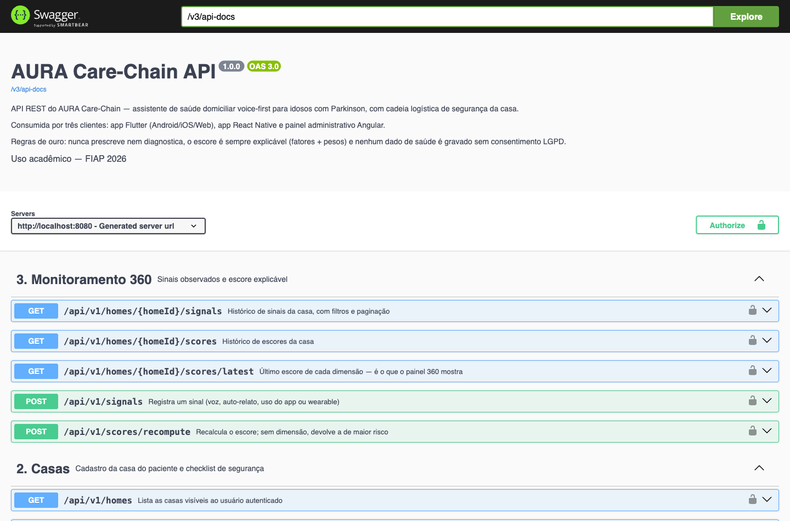
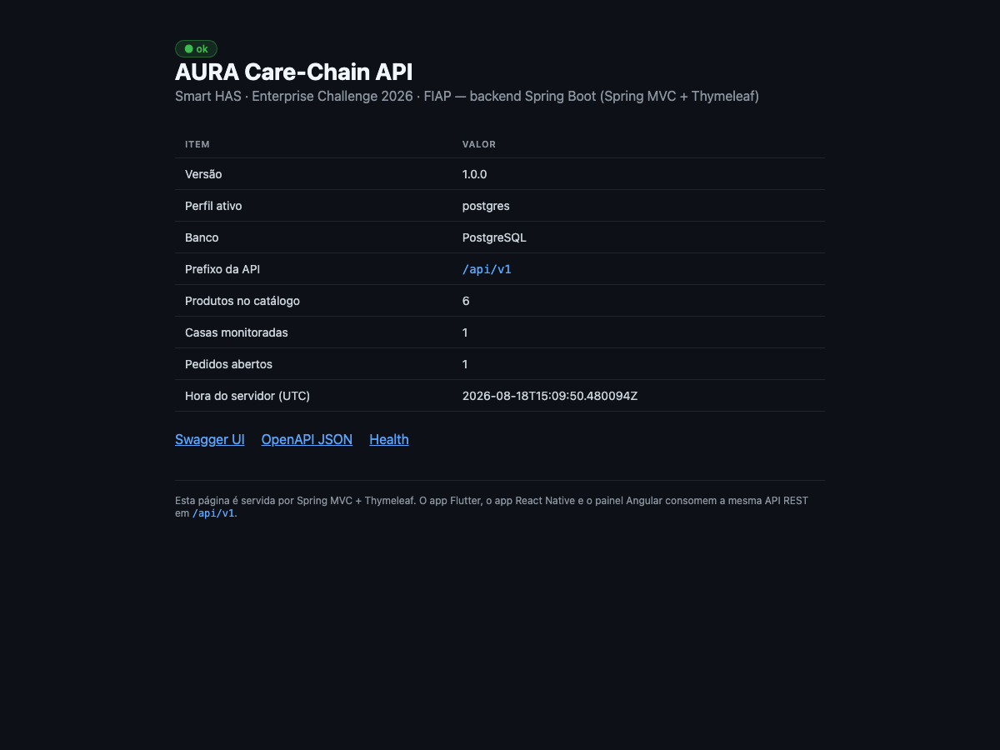
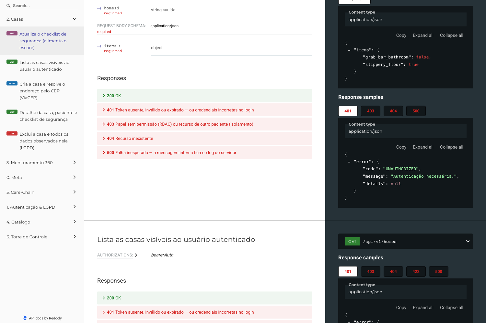
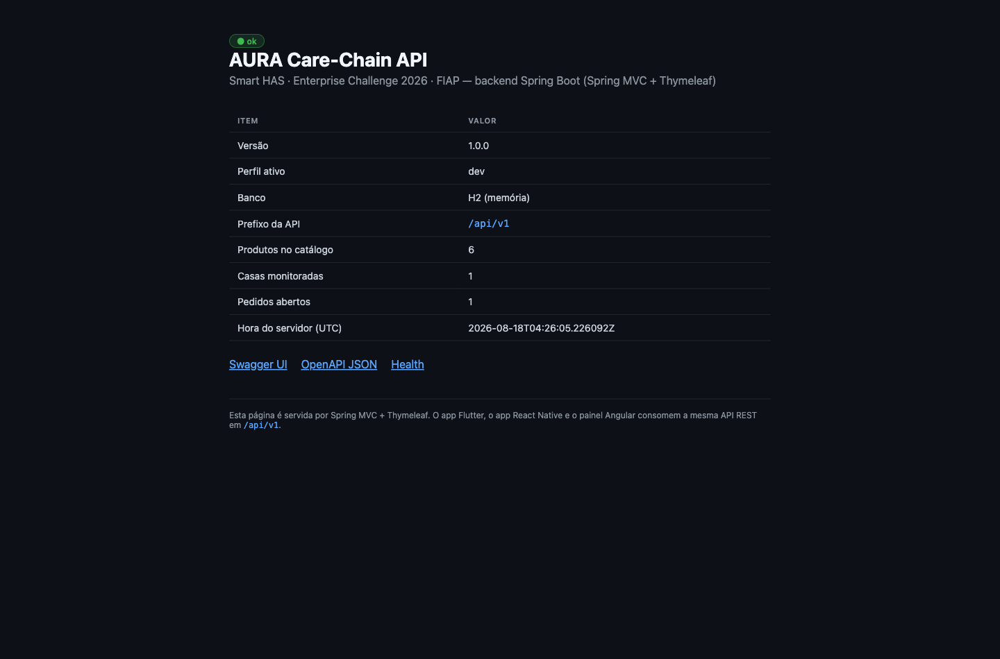

Documentação do projeto — Fase 5
AURA Care-Chain
Assistente Ubíquo de Resposta Ativa
Mobile Hybrid App e a Sociedade 5.0
Smart HAS · Enterprise Challenge 2026 (mentoria Leroy Merlin) · FIAP
Documentação do projeto — Fase 5
Assistente Ubíquo de Resposta Ativa
Mobile Hybrid App e a Sociedade 5.0
Smart HAS · Enterprise Challenge 2026 (mentoria Leroy Merlin) · FIAP
| Nome completo | RM | Papel | Frente nesta fase |
|---|---|---|---|
| Vinícius Miranda Baptista | 555081 | Tech Lead | Arquitetura da API e decisão de stack |
| João Domingos Góes Filho | 564465 | Dev Senior Mobile | App React Native e comparação de stacks |
| Pedro Henrique Arenas Negri | 554971 | Dev Pleno | Back-end Spring Boot, regras de negócio e painel Angular |
| Júlia Alves Dias | 557151 | Infra | Persistência, perfis de execução, testes e evidências |
| Entregável | Onde |
|---|---|
| Código-fonte (monorepo) | github.com/AuraSmartHAS/aura/tree/fase5 |
| Vídeo de demonstração (YouTube, não listado) | «inserir link do YouTube (não listado)» |
| Apresentação de slides | AURA - Apresentacao Fase 5.pdf (mesma pasta) |
| Equipe e links | Equipe e Links.txt (mesma pasta) |
Agosto / 2026
O AURA é um assistente de saúde domiciliar para idosos e pessoas com Doença de Parkinson, alinhado à Sociedade 5.0. Ele atende duas personas: Maria, a paciente, que interage inteiramente por voz, e Ana, a cuidadora, que acompanha o cuidado por um painel visual. Sobre esse núcleo de saúde roda a Care-Chain: quando o sistema percebe um risco na casa, ele explica o risco, recomenda o item de segurança correspondente (base NBR 9050) e — só depois da aprovação humana — dispara a cadeia logística até a instalação.
Nas fases anteriores o time entregou a estratégia de serviço (Fase 1), os processos e a arquitetura (Fase 2), o aplicativo nativo em Kotlin (Fase 3) e a migração para Flutter com a camada de logística inteligente, mapas e Firebase (Fase 4). O backend daquela fase foi escrito em Python/FastAPI.
Esta fase entrega três frentes novas, todas rodando e integradas pelo mesmo contrato de API:
| Parte | Entrega | Onde no repositório |
|---|---|---|
| Parte 1 — Stack mobile | Fluxo crítico do app recriado em React Native (Expo), mantendo o app Flutter como produto principal | mobile-rn/ |
| Parte 2 — Back-end | API REST em Java 21 + Spring Boot 3.3: Controllers, Services, Models, JWT, JPA, validação, tratamento de erros e Swagger | backend-spring/ |
| Parte 3 — Web | Painel administrativo em Angular 20 consumindo a mesma API | web-admin/ |
/api/v1 e
passa a consumi-la apontando BACKEND_BASE_URL para a porta 8080, sem alteração de
código — e é para lá que ele aponta por padrão desde esta fase, com o serviço da Fase 4 mantido
apenas como referência histórica. Foi essa decisão de contrato único que permitiu trocar de stack no
mobile e de linguagem no backend sem reescrever o produto: o que define o AURA são as regras
(escore explicável, gate LGPD, aprovação humana), não a tecnologia de cada superfície.
O time executou as duas frentes previstas no enunciado: manteve e aprimorou o app Flutter, que segue sendo a aplicação principal (Opção B — detalhado em 2.5), e, adicionalmente, recriou em React Native o fluxo de maior valor do produto como spike executável (Opção A). Não é meio-termo por indecisão: é a forma tecnicamente honesta de avaliar uma stack sem interromper o produto.
Descartar um aplicativo Flutter maduro (Clean Architecture, BLoC por feature, banco local com drift, integração com Health Connect, Google Maps e FCM) para reescrevê-lo inteiro em React Native destruiria patrimônio técnico validado em duas entregas — e, com o prazo da fase, provavelmente resultaria numa demonstração mais pobre do que a que já existe. Por outro lado, opinar sobre React Native sem escrever uma linha de React Native não é avaliação de stack, é achismo.
O caminho escolhido — um spike executável do caminho crítico — dá ao time as duas coisas: código real nas duas stacks para comparar, e nenhuma regressão no produto.
| Tela | Arquivo | O que faz | Componentes |
|---|---|---|---|
| Login | src/screens/LoginScreen.tsx |
Autenticação contra a API, estado de carregamento e erro traduzido do envelope da API | View, Text, Image, Button, TextInput, ActivityIndicator |
| Painel da cuidadora | src/screens/DashboardScreen.tsx |
Risco por dimensão com barra, nível, fatores e pesos; recalcular escore; registrar quase-queda | View, Text, Image, Button, ScrollView, RefreshControl |
| Care-Chain | src/screens/CareChainScreen.tsx |
Recomendação explicada, aprovação da cuidadora e linha do tempo do pedido até a instalação | View, Text, Button, ScrollView |
A navegação usa React Navigation (@react-navigation/native-stack)
com rotas tipadas em src/navigation.ts — o TypeScript passa a cobrar os parâmetros
de cada tela, e a chamada navigation.navigate('CareChain', { homeId, scoreId }) só
compila se os dois campos existirem:
export type RootStackParamList = {
Login: undefined;
Dashboard: undefined;
CareChain: { homeId: string; scoreId: string };
};
Todas as telas são componentes funcionais com hooks
(useState, useEffect, useCallback). O acesso à rede fica
isolado em src/api.ts, que anexa o Bearer e converte o envelope de erro
{"error":{"code","message"}} em mensagem de tela — o mesmo padrão do app Flutter.
npm run web abre o app
no navegador em segundos; é o caminho mais rápido para demonstrar o produto sem emulador —
o que reduz o atrito nas apresentações e nos testes com usuários.| Critério | Flutter (app principal) | React Native (spike desta fase) |
|---|---|---|
| Superfícies | Android, iOS e Web com uma base | Android, iOS e Web (via react-native-web) |
| Desempenho de UI | Renderização própria (Impeller/Skia), animações previsíveis | Componentes nativos; ponte JS ainda pesa em listas longas |
| Voz e acessibilidade nativa | Plugins maduros; a VUI da Maria já está pronta | Exigiria reimplementar a camada de voz e o TalkBack — fora do escopo do spike |
| Tipagem e refactor | Dart com null-safety forte | TypeScript, com rotas tipadas via React Navigation |
| Curva para o time | Dart é exclusivo do app | Reaproveita o TypeScript do painel Angular |
| Tempo até a primeira tela rodando | Maior (toolchain e emulador) | Menor no alvo web |
Conclusão do time: o Flutter segue sendo a stack certa para o produto — é onde estão a interface por voz, a acessibilidade e os recursos nativos que definem a experiência da Maria. O React Native se mostrou uma alternativa viável e produtiva para superfícies secundárias (demonstrações web, protótipos e telas de acompanhamento da cuidadora), e é nessa função que ele permanece no roadmap. A migração total não se justifica hoje; a opção de fazê-la existe, agora com dados.
O app principal não ficou parado. Duas entregas foram feitas no Flutter durante esta fase, ambas cobertas por teste automatizado — e ambas atacando a experiência das personas, não detalhe interno:
| Entrega | O que mudou | Teste |
|---|---|---|
| Validação inline nos formulários de acesso feat(auth), 14/08/2026 |
Login e cadastro passaram a validar antes de chamar a API, com mensagens em linguagem
simples (“E-mail inválido. Confira e tente de novo.”, “Use pelo menos 6 caracteres.”).
Erro técnico do servidor deixou de ser a primeira resposta que a pessoa vê — princípio
de acessibilidade que vale duplo para a persona idosa. Validadores extraídos em funções
puras (form_validators.dart). |
68 linhas cobrindo e-mail, senha de login, senha de cadastro e confirmação |
| Correção do detalhe do pedido fix(orders), 14/08/2026 |
Pedido em rota deixou de ocultar o mapa e a linha do tempo — justamente o momento em que a cuidadora mais precisa dessas duas informações. | 70 linhas garantindo que o pedido em rota expõe rota válida para o mapa |
São mudanças de escopo contido, e a documentação não as apresenta como reescrita: a frente principal do mobile nesta fase foi o spike em React Native. O ponto é que a Opção B também foi exercida, com código e teste verificáveis no histórico do repositório.
| Momento | O que foi/será feito | Situação |
|---|---|---|
| Fases 1 e 2 | Estratégia de serviço, personas, processos e arquitetura de referência | Concluído |
| Fase 3 | App nativo Android em Kotlin (Jetpack Compose) | Concluído |
| Fase 4 | Migração para Flutter, Care-Chain, monitoramento 360, mapas, FCM e backend FastAPI | Concluído |
| Fase 5 (esta entrega) | API REST em Spring Boot com JWT e persistência; painel administrativo Angular; fluxo crítico recriado em React Native | Concluído |
| Próximas fases | Migrar para o Spring Boot as rotas que ainda vivem no serviço FastAPI (voz, medicação, realtime); publicar a API em nuvem com PostgreSQL gerenciado; observabilidade (Actuator + métricas) e CI/CD; testes de usabilidade com idosos medindo SUS e sucesso por tarefa | Planejado |
| Item | Escolha |
|---|---|
| Linguagem e plataforma | Java 21 (virtual threads habilitadas) |
| Framework | Spring Boot 3.3 — Spring MVC, Data JPA, Security, Validation, Thymeleaf |
| Persistência | H2 em memória no perfil dev (com carga de demonstração) · PostgreSQL no perfil postgres |
| Autenticação | JWT HS256 — access de 30 min e refresh de 7 dias, sem sessão no servidor |
| Documentação | springdoc-openapi — Swagger UI em /swagger-ui.html |
| Build e execução | Maven Wrapper — ./mvnw spring-boot:run, sem instalar Maven |
O H2 é o perfil de demonstração, escolhido para que a avaliação rode com um
comando e sem instalar banco nenhum. A persistência real é PostgreSQL no perfil
postgres, com o mesmo código, o mesmo mapeamento e o mesmo schema — os campos JSON
usam conversores dedicados justamente para que nada mude entre os dois bancos.
Os dois perfis foram executados e verificados nesta entrega. No perfil
postgres, o fluxo completo foi percorrido e os dados conferidos direto no banco por
psql — pedido em DELIVERED, casa cadastrada e o escore de mobilidade
gravado como HIGH 0.9 —, comprovando que o mesmo código persiste em PostgreSQL sem
alteração (evidência na seção 5).
br.com.fiap.aura
├── web/ Controllers REST · DTOs (records) · tratamento global de erro
├── service/ Regras de negócio: escore, Care-Chain, guardrails, geo, KPIs
├── repository/ Spring Data JPA (interfaces, sem implementação manual)
├── domain/ Entidades JPA · enums · conversores JSON
└── config/ Security (JWT), OpenAPI, propriedades tipadas e carga inicialO controller não conhece JPA e o service não conhece HTTP: o controller recebe o DTO validado, delega ao service e devolve o DTO de resposta. Essa separação é o que permitiu escrever o teste ponta a ponta em MockMvc sem subir servidor e, ao mesmo tempo, testar o motor de escore isoladamente.
| Entidade | Papel no domínio |
|---|---|
UserAccount | Conta com papel (paciente, cuidadora, profissional, admin) e token de push |
Consent | Aceite da política LGPD — condição para qualquer dado de saúde |
Home | Casa do paciente: endereço, coordenadas e checklist de segurança |
Signal | Sinal observado (voz, auto-relato, uso do app, wearable) — nunca sensor IoT |
Score | Escore por dimensão com fatores, pesos, explicação e versão da configuração |
Product | Item do catálogo de acessibilidade (NBR 9050) e estoque próximo |
Recommendation | Recomendação explicada, com status recommended → approved/rejected |
DeliveryOrder | Pedido da cadeia de segurança, com estágio, SLA e dados de entrega |
StockNode | Loja ou centro de distribuição (roteamento ship-from-store) |
Campos livres (checklist, valor do sinal, listas de fatores e pesos) são gravados como JSON em
texto por AttributeConverter dedicados. A escolha é deliberada: o mesmo mapeamento
funciona sem alteração em H2 e em PostgreSQL, o que mantém o teste local fiel ao ambiente de
produção.
São 42 operações REST distribuídas em 34 rotas sob /api/v1 — o número
pode ser conferido no próprio /v3/api-docs da aplicação rodando. A tabela abaixo
agrupa as operações por recurso.
| Método | Rota | Descrição | Acesso |
|---|---|---|---|
| POST | /api/v1/auth/signup | Cria conta e já devolve o par de tokens | pública |
| POST | /api/v1/auth/login | Autentica | pública |
| POST | /api/v1/auth/refresh | Troca o refresh por um novo access | pública |
| GET | /api/v1/auth/me | Usuário atual e situação do consentimento | autenticado |
| POST | /api/v1/auth/password | Troca de senha | autenticado |
| DELETE | /api/v1/auth/me | Exclui a conta e todos os dados do titular (LGPD, art. 18) | autenticado |
| POST | /api/v1/consent | Aceite LGPD | autenticado |
| POST | /api/v1/notifications/register-token | Registra o token do dispositivo para push (FCM) | autenticado |
| POST/GET | /api/v1/homes | Cria e lista casas (endereço resolvido por CEP) | autenticado |
| GET | /api/v1/homes/{id} | Detalhe da casa e checklist | dono da casa |
| DELETE | /api/v1/homes/{id} | Exclui a casa e tudo que foi observado nela | dono da casa |
| PUT | /api/v1/homes/{id}/checklist | Atualiza os itens de segurança | dono da casa |
| POST/GET | /api/v1/signals · /homes/{id}/signals | Registra e lista sinais (com filtros e paginação) | dono da casa |
| POST | /api/v1/scores/recompute | Recalcula o escore explicável | dono da casa |
| GET | /api/v1/homes/{id}/scores · /scores/latest | Histórico e último por dimensão | dono da casa |
| GET | /api/v1/catalog · /catalog/{sku} | Catálogo de acessibilidade | autenticado |
| POST/PUT/DELETE | /api/v1/catalog/{sku} | CRUD do catálogo | admin |
| POST/GET | /api/v1/recommendations · /homes/{id}/recommendations | Gera e lista recomendações explicadas | dono da casa |
| POST | /api/v1/recommendations/{id}/approve · /reject | Aprovação ou recusa humana | dono da casa |
| POST/GET | /api/v1/orders/{id}/advance · /orders/{id} | Avança o estágio e detalha o pedido | dono da casa |
| GET | /api/v1/ops/kpis | KPIs da Torre de Controle | admin |
| GET | /api/v1/health · / | Health check e página de status (Thymeleaf) | pública |
A API é stateless: não há sessão no servidor. O JwtService emite
dois tokens (access e refresh, distinguidos por uma claim typ — um refresh não vale
como access), e um OncePerRequestFilter valida o Bearer e popula o contexto de
segurança. A autorização tem três camadas:
/api/v1/ops/** exige ROLE_ADMIN na cadeia de filtros.@PreAuthorize("hasRole('ADMIN')").403, e não 404,
porque o cliente precisa distinguir "não é seu" de "não existe".
As senhas são gravadas com BCrypt. O segredo do JWT vem da variável
AURA_JWT_SECRET; o valor embutido serve apenas à demonstração local. O CORS é
configurável por propriedade — liberado na demo, restrito por origem em produção.
Em ambiente publicado, a comunicação entre mobile e back-end fica atrás de TLS (HTTPS obrigatório, com HSTS), com o segredo injetado por variável de ambiente e o CORS restrito às origens conhecidas. O cenário local usa HTTP apenas para dispensar certificado durante a avaliação — nenhuma credencial trafega fora da máquina do avaliador.
Todo corpo de requisição é um record anotado com Bean Validation
(@NotBlank, @Email, @Size, @Pattern para o CEP).
Um @RestControllerAdvice traduz qualquer falha para um envelope único, o mesmo que
os três clientes já sabiam ler:
{ "error": { "code": "CONSENT_REQUIRED",
"message": "Aceite a Política de Privacidade antes de registrar dados de saúde.",
"details": null } }| Código | HTTP | Quando acontece |
|---|---|---|
VALIDATION_ERROR | 400 | Payload inválido — details traz o campo e o motivo |
UNKNOWN_DIMENSION | 400 | Dimensão de escore inexistente na configuração |
UNAUTHORIZED · TOKEN_EXPIRED · INVALID_CREDENTIALS | 401 | Token ausente, expirado ou credenciais incorretas |
FORBIDDEN | 403 | Papel sem permissão ou casa de outro paciente |
NOT_FOUND | 404 | Recurso inexistente |
CONFLICT | 409 | E-mail duplicado, recomendação já aprovada, pedido terminal |
CONSENT_REQUIRED · APPROVAL_REQUIRED · PRESCRIPTION_BLOCKED · SCORE_HOME_MISMATCH · NO_PRODUCT | 422 | Regras de negócio do produto |
INTERNAL_ERROR | 500 | Falha inesperada — a mensagem interna nunca vaza ao cliente |
Escore explicável. O ScoringService soma os pesos dos fatores
acionados e devolve, junto do número, a lista de fatores e a frase que o explica. Os pesos
não estão no código: ficam em scoring-weights.yml, versionado e carregado
como propriedade tipada. Mudar a política de risco é editar YAML, não recompilar — é o que
sustenta a promessa de auditabilidade.
mobility:
norm: "NBR 9050"
risk-tag: fall_bathroom
factors:
- name: near_fall_reported weight: 0.4 kind: SIGNAL_EVENT event: near_fall
- name: no_grab_bar weight: 0.3 kind: CHECKLIST_ABSENT checklist-key: grab_bar_bathroom
- name: anti_slip_floor weight: 0.2 kind: CHECKLIST_ABSENT checklist-key: anti_slip_floorResultado real da API para a casa da Maria (quase-queda relatada, sem barra de apoio, sem piso anti-derrapante):
{ "dimension": "mobility", "level": "high", "score": 0.9,
"factors": ["near_fall_reported", "no_grab_bar", "anti_slip_floor"],
"weights": [0.4, 0.3, 0.2],
"explanation": "Fatores acionados: quase-queda relatada (0,4), ausência de barra de apoio (0,3),
piso anti-derrapante (0,2). Norma NBR 9050. → risco ALTO.",
"configVersion": "2026-06-14" }Guardrail de não-prescrição. Todo texto que sai da API passa pelo
GuardrailService. Se contiver linguagem prescritiva ou diagnóstica, a resposta é
bloqueada com 422 PRESCRIPTION_BLOCKED. A regra não depende de disciplina de quem
escreve o texto — está no caminho de saída.
Gate LGPD. Criar casa, registrar sinal, recalcular escore e gerar
recomendação exigem consentimento aceito. Sem ele, a resposta é 422 CONSENT_REQUIRED.
Direito de exclusão. DELETE /auth/me e
DELETE /homes/{id} apagam de verdade — conta, consentimento, casas, sinais,
escores, recomendações e pedidos — em vez de marcar registros como inativos. É a contrapartida
do gate de consentimento: quem autoriza também consegue revogar.
Nenhum pedido sem aprovação humana. A recomendação só vira pedido em
POST /recommendations/{id}/approve. Enquanto a cuidadora não aprova, a lista de
pedidos da casa é literalmente vazia — e isso é verificado por teste automatizado.
A API é documentada com springdoc-openapi, gerada a partir do próprio código —
não há documento paralelo que possa envelhecer. O Swagger UI (/swagger-ui.html)
lista as 42 operações agrupadas por contexto, com o esquema bearerAuth configurado:
dá para autenticar com o botão Authorize e executar o fluxo inteiro pelo navegador.
A documentação cobre, para cada operação:
{error:{code,message,details}} e um exemplo por código. As comuns
(401, 403, 404, 500) são aplicadas por um customizer a todas as operações; as de
negócio (409 CONFLICT, 422 CONSENT_REQUIRED,
APPROVAL_REQUIRED, NO_PRODUCT, 400 UNKNOWN_DIMENSION)
aparecem apenas nas rotas que de fato as devolvem. Documentar 32 métodos à mão ficaria
desatualizado no primeiro endpoint novo — aqui a documentação nasce do mesmo envelope que
o tratador global de erros produz.factors[i] ↔ weights[i]), com os valores da casa da
Maria — 0.9, os três fatores e os pesos 0.4/0.3/0.2.
O contrato é exportado para docs/api/openapi.json e publicado também como
página navegável offline (docs/api/aura-api.html, incluída no ZIP
da entrega): dá para ler a API inteira sem subir o backend — útil para correção e para
qualquer integração futura.
Além da API, o backend serve uma página de status renderizada com Spring MVC + Thymeleaf, mostrando perfil ativo, banco em uso e contagem de produtos, casas e pedidos abertos. A camada de apresentação do produto vive nos clientes; o Thymeleaf cumpre aqui o papel de superfície operacional do servidor, renderizada sem depender de nenhum cliente estar no ar.
São 168 testes automatizados no projeto, todos verdes, distribuídos pelos quatro módulos — e todos executados nesta entrega:
| Módulo | Testes | Comando | O que cobrem |
|---|---|---|---|
| Back-end (JUnit + MockMvc) | 50 | ./mvnw test |
motor de escore, guardrail, o percurso completo da API, o ciclo de vida da medicação e o isolamento entre pacientes |
| Painel Angular (Jasmine/Karma) | 17 | npm test |
cliente HTTP, sessão, interceptor JWT e tradução de erro |
| Painel Angular (Playwright) | 6 | npm run e2e |
fluxo ponta a ponta no navegador, contra a API real |
| App React Native (Jest) | 7 | npm test |
contrato do cliente da API, Bearer e envelope de erro |
| App Flutter (flutter_test) | 88 | flutter test |
validadores dos formulários e layout do detalhe do pedido |
| Teste | O que garante |
|---|---|
| Escore de risco alto | 0,4 + 0,3 + 0,2 = 0,9 → nível high, com os três fatores e pesos corretos na explicação |
| Escore de risco baixo | Casa protegida e sem eventos não aciona nenhum fator |
| Faixas de nível | Fronteiras low/medium/high conforme a configuração |
| Dimensão desconhecida | 400 UNKNOWN_DIMENSION |
| Guardrail | Texto prescritivo é bloqueado; texto de segurança passa |
| Fluxo ponta a ponta | Gate LGPD → casa → checklist → sinal → escore alto → recomendação → aprovação → pedido entregue no prazo, com o nó logístico mais próximo |
| Dupla aprovação | 409 CONFLICT |
| Isolamento entre pacientes | Casa de outra cuidadora responde 403 |
| Autenticação e RBAC | Sem token → 401; cuidadora em /ops → 403; admin → 200 |
| Exclusão LGPD | Apagar a casa remove os sinais junto; apagar a conta impede o login seguinte |
| Validação e rotas públicas | VALIDATION_ERROR com o campo culpado; health e página de status abertos |
Os seis testes de Playwright rodam contra a API real, sem nenhum mock: se o backend quebrar o contrato, eles caem junto. Eles verificam exatamente as promessas do produto — que o risco muda quando o checklist muda, que nenhum pedido nasce sem a aprovação da cuidadora, que o pedido avança pelos estágios, que os KPIs são exclusivos do admin, que o CRUD do catálogo funciona e que um login inválido mostra a mensagem vinda da API. A suíte sobe sozinha o backend e o painel, ou reaproveita os que já estiverem no ar.
limit/offset e ordena pela chave natural (casa, data).
O web-admin/ é a superfície web do produto: a mesma cuidadora que usa o app pode
acompanhar a casa pelo navegador, e a operação enxerga a Torre de Controle. É Angular
20 com standalone components e signals, consumindo exatamente a mesma
API REST do Spring Boot — nenhum endpoint foi criado só para a web.
| Rota | Tela | Conteúdo |
|---|---|---|
/login | Entrada | Formulário com [(ngModel)], contas de demonstração e feedback de erro |
/home | Casa do paciente | Ficha da casa, checklist editável, risco por dimensão com fatores e pesos, Care-Chain e pedidos com linha do tempo |
/admin | Torre de Controle | KPIs (OTIF, fill rate, lead time, SLA), pedidos por estágio e CRUD do catálogo |
| Recurso | Uso no projeto |
|---|---|
Interpolação {{ }} | Todos os templates — {{ score.explanation }}, {{ percent(k.otif) }} |
Property binding [ ] | [disabled] nos botões, [value] no seletor de casa, [style.width] na barra de risco, [class.kpi__value--good] quando o KPI bate a meta |
Event binding ( ) | (click) em aprovar/avançar, (ngSubmit) nos formulários, (change) no filtro de risco |
Two-way [( )] | [(ngModel)] no login, nos checkboxes do checklist de segurança e em todos os campos do formulário de produto |
*ngIf | Estados vazios, mensagens de erro e sucesso, botões condicionais por status e por papel |
*ngFor | Escores, fatores, recomendações, pedidos, estágios da linha do tempo, catálogo e KPIs por estágio |
| Serviços e DI | ApiService e AuthService injetados com inject() |
HttpClient | Todas as chamadas, com HttpParams nos filtros |
| Interceptor e guard | authInterceptor injeta o Bearer e derruba a sessão em 401; authGuard protege as rotas |
| Pipes | date, currency: 'BRL', json e keyvalue (locale pt-BR registrado) |
O token JWT é guardado no navegador e anexado por um interceptor funcional — nenhum
componente monta cabeçalho na mão. Se a API responde 401, a sessão é limpa e o usuário volta ao
login sem tela quebrada. Cada ação tem estado próprio (busy()), com botão desabilitado
e rótulo mudando para "Salvando…", "Calculando…"; erros aparecem traduzidos do envelope da API
(inclusive o caso de backend fora do ar, com instrução do que fazer) e as confirmações somem
sozinhas após alguns segundos. A interface é escura, com contraste conferido para leitura
confortável, e os níveis de risco usam cor e texto — nunca só cor.
Capturas obtidas com as três aplicações rodando simultaneamente contra a mesma API (Spring Boot na porta 8080, painel Angular na 4200 e app React Native na 8081).


postgres: banco PostgreSQL, com o catálogo,
a casa e o pedido persistidos — o H2 é apenas o perfil de demonstração.



# 1) API (porta 8080) — não precisa de Docker nem de banco instalado
cd backend-spring && ./mvnw spring-boot:run
# Swagger: http://localhost:8080/swagger-ui.html
# Status : http://localhost:8080/
# 2) Painel Angular (porta 4200)
cd web-admin && npm install && npm start
# 3) App React Native (porta 8081 — abre no navegador)
cd mobile-rn && npm install && npm run web
# 4) App Flutter
cd mobile && cp .env.example .env && flutter pub get && flutter run -d chrome
# Testes do backend
cd backend-spring && ./mvnw test
Contas criadas automaticamente (senha aura1234): ana@aura.com
(cuidadora, já com consentimento aceito e a casa da Maria cadastrada),
admin@aura.com (Torre de Controle) e maria@aura.com (paciente).
Para rodar com PostgreSQL: docker compose up -d e
./mvnw spring-boot:run -Dspring-boot.run.profiles=postgres.
Sobre o compromisso assumido na Fase 4. Naquela entrega o grupo se comprometeu, respondendo ao feedback do professor, a levar o sistema a usuários reais e apresentar evidência quantitativa. Esta fase não cumpriu essa parte: o esforço foi integralmente para tornar o sistema testável de ponta a ponta — API própria, painel web e segundo cliente mobile — que é a pré-condição para uma sessão de teste que valha alguma coisa. O protocolo (perfis, tarefas, métricas e metas) segue definido e sem alteração; o que falta é executá-lo. Assumimos o atraso em vez de repetir a promessa.
Os indicadores de produto definidos na fase anterior continuam valendo e agora têm de onde sair:
o endpoint /api/v1/ops/kpis calcula OTIF, fill rate, lead time, pedidos abertos e
violações de SLA a partir dos pedidos reais — não são números escritos à mão no slide.
| Indicador | Meta | Origem |
|---|---|---|
| OTIF — entregas no prazo | ≥ 95% | calculado pela API sobre os pedidos entregues |
| Fill rate — disponibilidade | ≥ 90% | catálogo com estoque próximo |
| Lead time — pedido → entrega | monitorar | diferença entre criação e entrega |
| SUS — usabilidade | ≥ 70 | sessões com idosos e cuidadores (planejado) |
| Sucesso por tarefa | ≥ 80% | sessões com idosos e cuidadores (planejado) |
github.com/AuraSmartHAS/aura/tree/fase5
(backend-spring/, web-admin/, mobile-rn/, mobile/).
O código desta fase está na branch fase5; a main ainda
guarda o estado da entrega anterior.documentacao-api/aura-api.html (navegável, abre no
navegador sem servidor) e documentacao-api/openapi.json (contrato OpenAPI 3).